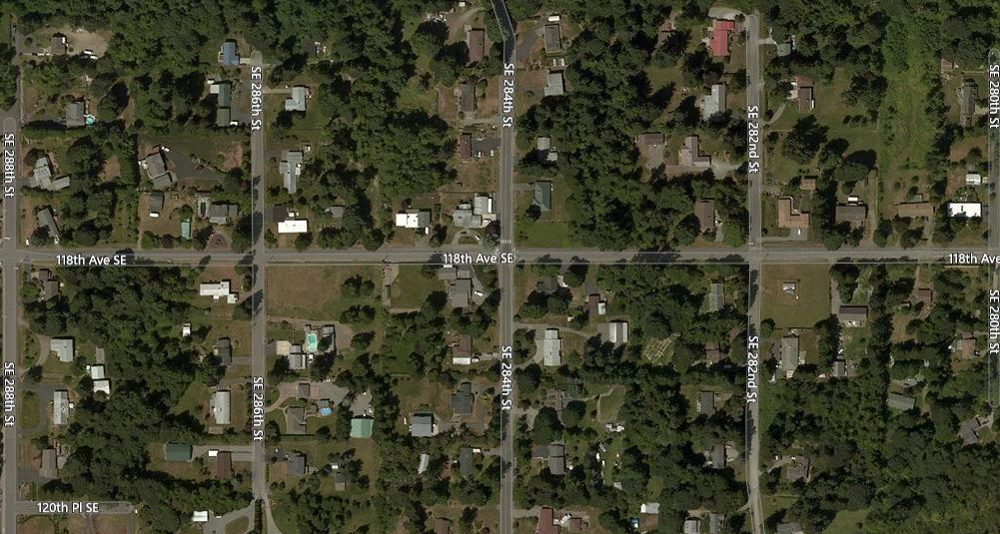

About The Derbyshire Scenic Acres Water Association

Our water district was founded in unincorporated King County in 1960, the nearest city being Kent. Nearly all of the system was annexed into Auburn in 2008. We currently serve 59 homes in the neighborhood, stretching 4 houses east and west of 118th Ave from SE 280th St to SE 288th St. Bylaws restrict service to 1 service-line hookup per lot.
The well and pumphouse is located on the corner of 118th Ave and SE 282nd, and contains our water treatment system and a diesel generator which kicks on automatically in the event of a power outage.
Our water is tested weekly. Water quality reports are done on a regular basis and sent to residents annually. Reach out to the Secretary if you did not receive one.
As of 2024 we are in the process of a complete upgrade to the overall water distribution system, for the first time in over 60 years. This is designed to improve service reliability and quality.